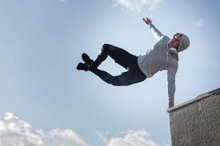

Parkour
Entwickelt wurde Parkour von Raymond Belle, seinem Sohn David Belle und anderen Leuten in den späten 1980er Jahren. Parkour wurde in den späten 1990er Jahren und 2000er Jahren durch Spielfilme, Dokumentarfilme und Werbung populär. Bei der Sportart geht es darum so schnell und schön wie möglich, verschiedene Hindernisse zu überwinden. Ich mag diesen Sport da ich meine Mitmenschen einfach beeindrucken kann und ich jedes mal wenn ich einen aufregenden Sprung vor mir habe, einen leichten Adrenalin Schock bekomme. Meine Sprünge sind noch nicht perfekt und ich bin lange noch kein Profi doch die Basics wie z.B. Backflip, Frontflip beherrsche ich und noch ein bisschen mehr. Ein passendes Video dazu: https://youtu.be/ZeHrb2FxrJg
